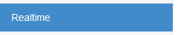
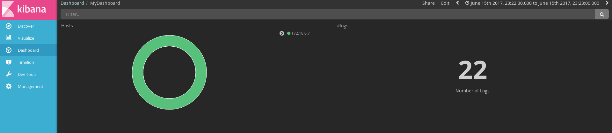

1 - USER MANUAL¶
Deploy¶
- run maven tests:
mvn test(optional) - run jenkins:
sudo(with tests) - run docker-compose:
sudo docker-compose up(instead of jenkins)
Dashboard (User)¶
website: http://deti-engsoft-06.ua.pt:12215/dashboard/
- Access real time data: press the button “Realtime” on the sidebar

Figure: Realtime button
Figure: Dashboard with realtime data
- Access historic data: choose the button “History” on the left side
Figure: History button

Figure: Dashboard with history
- See alerts: The alers will automaticly show up on the righ corner in red.
Figure: Dashboard alert message
- See the details of one point in the graphic: Pass the cursor on top of the point in question
Figure: Detail of each point
Kibana (Website for monitorization)¶
website: http://deti-engsoft-06.ua.pt:5601/
Figure: Kibana
To see the dashboard, import the file export.json.

Figure: Kibana Dashboard